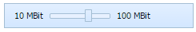

an item having a slider in it that allows the user to change item's value within the available limits (the user can drag the slider's thumb in one of two directions):

The addSlider method should be used to create a new Slider:
myToolbar.addSlider(id, pos, len, valueMin, valueMax, valueNow, textMin, textMax, tip);
As for input parameters the user should set, they are as follows:
If you want Slider to be created with a text-free tooltip, it's necessary to set an empty string as a value of the tip parameter.
Related sample: Slider creation
The following methods that are available for the Button item, can be applied to the Slider as well:
Related sample: Slider manipulation
All the parameters of the above mentioned methods are the same to those described in Button Settings Manipulations section.
Tooltip template is applied only to Slider. The tooltip template can be represented in three ways:
The setItemToolTipTemplate method is used to set the tooltip template:
myToolbar.setItemToolTipTemplate(id, template);
This method takes the following parameters:
For example, if the user wants his tooltip to show the text like this: "Current Value is:" plus the changeable text showing slider's values when the thumb is moved, the code must be the following:
myToolbar.setItemToolTipTemplate("slider","Current Value is:+%v");
The following method can return the current slider's tooltip template:
var template = myToolbar.getItemToolTipTemplate(id); // returns current slider's tooltip text
Related sample: Slider tooltip template
The user can set the Slider to a certain value within the range of available values with the help of the following method:
myToolbar.setValue(id,value,callEvent);
The parameters are as follows:
Note: If the user has indicated the value that is not within the range of available values, the slider's thumb will be set either to the minimum or to the maximum value.
Slider's current value can be easily got by the following method:
var value = myToolbar.getValue(id); // returns slider's current value
There is a method to set slider's minimum value:
myToolbar.setMinValue(id, value, label);
The following parameters should be passed to this method:
Note: if the user wants the slider's minimum value to be created text-free, it's necessary to write an empty string as label parameter. For example:
myToolbar.setMinValue("slider", 25, "");
Slider's current minimum value can be got using getMinValue method:
var data = myToolbar.getMinValue(id); // returns slider's current minimum value
This method returns the following Array(value, label).
There is a method to set slider's maximum value:
myToolbar.setMaxValue(id,value,label);
The following parameters should be passed to this method:
Note: if the user wants the slider's maximum value to be created text-free, it's necessary to write an empty string as label parameter. For example:
myToolbar.setMaxValue("slider", 25, "");
Slider's current maximum value can be got using getMaxValue method:
var data = myToolbar.getMaxValue(id); // returns current maximum value
This method returns the following Array(value, label).
Back to top